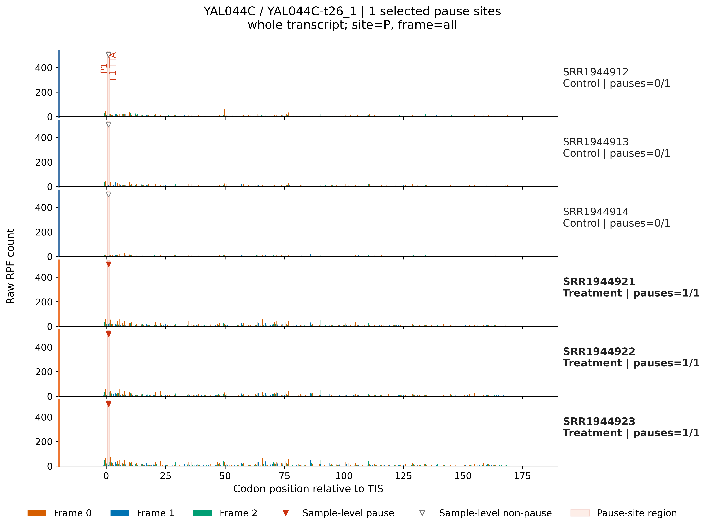
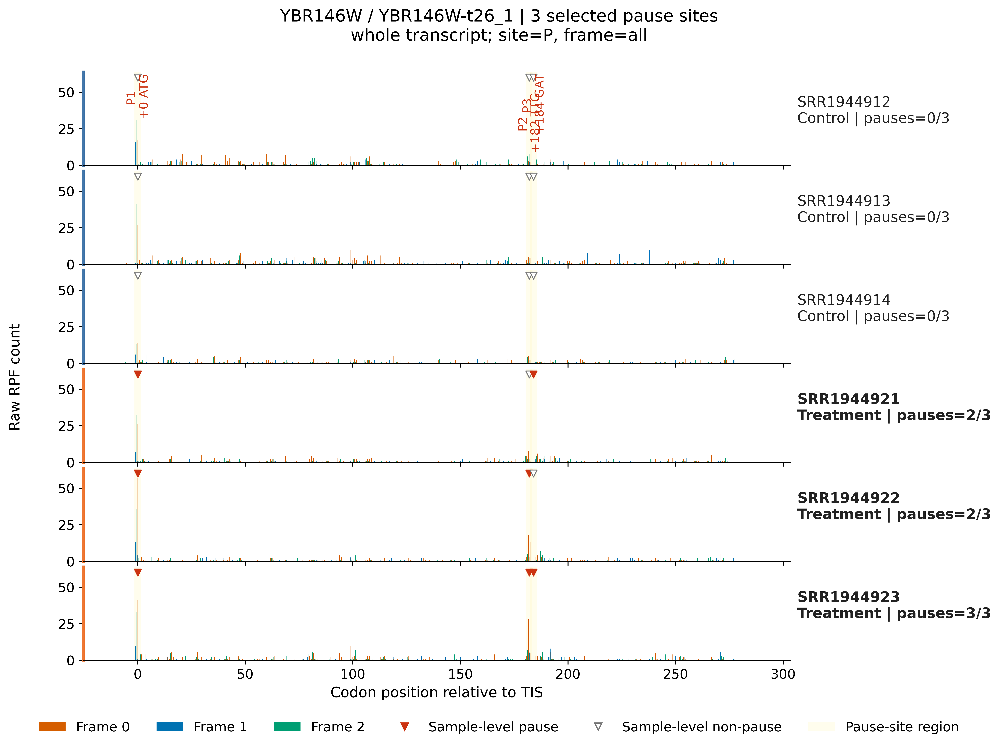

4.7.9 Pause site plot¶
Purpose¶
rpf_PSplot visualizes the pausing sites detected by rpf_Odd_Ratio (see 4.7.8 Codon odds ratio) directly on the sample-resolved raw RPF profiles of the selected genes. For each target transcript, one sub-plot is drawn per sample; the raw density profile is shown together with the reading frame and the detected pause codons, so that a statistically detected stalling site can be checked against its actual read coverage in every sample.
Key features:
- Directly plots the
rpf_Odd_Ratioresults – the input is the site-level table produced byrpf_Odd_Ratio(for example<prefix>_codon_local_pause.txt), so no separate pause-calling step is required. - Sample-resolved profiles – every control and treatment sample used by
rpf_Odd_Ratiois drawn as its own sub-plot, with its own y-axis when--y-scale sampleis used. - Frame-aware rendering – each nucleotide is colored by its reading frame (
0/1/2), which makes frame shifts and in-frame pauses easy to recognize. - Pause annotation – the detected pause sites are marked with a triangle and a
P{number} {+offset} {codon}label; the--pause-regionoption additionally paints a background band over each pause codon. - Per-sample pause verification – for every event and every sample the local metrics (
site_rpf,local_mean,local_coverage,pause_score) are recomputed from the raw density, andsample_pauserecords whether the site is actually paused in that sample. - Optional metrics export – with
--export-metricsa per-event, per-sample metrics table is written, which is convenient for summarizing how many samples really pause at each detected site.
The analysis is performed in five steps:
- Argument check and file validation – check the input arguments and the input files.
- Import and filter pausing-site events – read the
rpf_Odd_Ratiosite table, resolve the target transcripts and the control/treatment groups, and keep only the events of the target genes. - Stream the RPF density file – scan the compact JSONL density file and retrieve only the records of the target transcripts.
- Draw pausing-site profiles – for each target transcript draw one profile per sample and annotate the pause sites.
- Export sample-level pause metrics – write the per-event, per-sample pause metrics table (only with
--export-metrics).
Pause-site verification¶
For each event and each sample, the local statistics are recomputed from the raw density of that sample. A site is considered paused in a sample (sample_pause = True) when all of the following conditions hold:
site_rpf >= min_site_rpf (default 3, taken from the rpf_Odd_Ratio run)
pause_score >= pause_score (site_rpf / local_mean, threshold from the rpf_Odd_Ratio run, default 10)
local_coverage >= min_local_coverage (fraction of non-zero codons in the local window, default 0.10)
site_rpf– RPF count at the pause codon in this sample.local_mean– mean RPF of the codons in the local window around the site.local_coverage– fraction of the local-window codons with non-zero RPF.pause_score–site_rpf / local_mean, a measure of how strongly the site stands out from its local background.
Because the pause threshold values are read from the metadata columns of the input table (pause_score_threshold, min_site_rpf_threshold, min_local_coverage_threshold, written by rpf_Odd_Ratio), the verification always uses the same criteria as the original detection. In the figure, sites that are paused in a sample are marked with a solid red triangle; sites that do not reach the threshold in that sample are marked with a grey/white triangle.
Step 1: Run rpf_PSplot¶
The input is the site-level table produced by rpf_Odd_Ratio (see 4.7.8 Codon odds ratio) and the compact RPF density file used by that analysis (see 4.5.5 Merge density). The density file is streamed, so only the target transcripts are kept in memory.
1.1 Parameters¶
| Parameter | Required | Description |
|---|---|---|
-i, --input |
Yes | Input rpf_Odd_Ratio site-level TXT table (for example <prefix>_codon_local_pause.txt). |
-r, --rpf |
Yes | Input compact RPF density file (JSONL or JSONL.GZ). |
-o, --output |
Yes | Output file prefix. |
-g, --gene, --target |
Yes* | Gene ID, transcript ID, or result-table name to plot. Mutually exclusive with --target-list. |
--target-list |
Yes* | Target list file; the first non-empty column is used. Mutually exclusive with --gene. |
-n, --normal |
No | Plot RPM-normalized density. Disabled by default; sample pause metrics always use raw counts. |
--view |
No | Plot view. Choices region, gene. Default gene (whole-gene view). region zooms to the pause span with --flank. |
--flank |
No | Upstream/downstream codons shown around the pause span in region view. Default 30. |
--plot-transform |
No | Display-only density transformation. Choices none, sqrt, log1p, log2, log10. Default none. |
--y-scale |
No | Y-axis range. Choices shared (one range for all samples), sample (per-sample range). Default shared. |
--y-max |
No | Optional fixed y-axis maximum (applied after the transformation). |
--pause-region |
No | Highlight each pause codon with a background region. Disabled by default. |
--output-format |
No | Figure output format. Choices pdf, png, both. Default pdf. |
--export-metrics |
No | Export the per-event, per-sample pause metrics table. Disabled by default. |
--dpi |
No | PNG output resolution. Default 300. |
--font-size |
No | Base figure font size. Default 9.0. |
* Exactly one of --gene / --target-list is required.
1.2 Example¶
Prepare the input files:
Draw the pasuing-site plots for the four genes in gene.list:
cd ./sce/4.ribo-seq/19.pause_site_plot/
rpf_PSplot \
-i ../codon_odd_ratio/sce_codon_local_pause.txt \
-r ../05.merge/sce_rpf_merged.jsonl.gz \
--target-list gene.list \
--view gene \
--output-format both \
--export-metrics \
--dpi 600 \
--font-size 12 \
-o sce_ps \
--pause-region \
&> sce_ps.log
In this example, all pausing-site events of the four genes in gene.list are drawn on the raw RPF profiles of the same six samples used by rpf_Odd_Ratio. The figures are exported both as PDF and as 600-dpi PNG, the pause codons are highlighted with background regions (--pause-region), and the per-sample pause metrics are exported (--export-metrics).
1.3 Output¶
All output files are written to the current working directory with the given prefix:
| Output | Description |
|---|---|
<prefix>_<gene>_<transcript>_PSplot.pdf / .png |
One figure per target transcript, with one sample-resolved RPF profile panel. |
<prefix>_PSplot.metrics.txt |
Per-event, per-sample pause metrics (only with --export-metrics). |
Figure – one panel per sample. Each panel shows the raw (or transformed) RPF density along the transcript; nucleotides are colored by reading frame (orange 0, blue 1, green 2). Detected pause sites are marked with a triangle and a P{number} {+offset} {codon} label (solid red triangle when the site is paused in that sample, grey/white triangle otherwise). With --pause-region, the region of each pause codon is additionally shaded.
Metrics table <prefix>_PSplot.metrics.txt – one row per event and sample:
event_number site_number gene_id transcript_id name from_tis codon pause_class sample group analysis_site analysis_frame site_rpf local_mean local_coverage pause_score sample_pause
event_number/site_number– internal index of the event and of its site.gene_id/transcript_id/name– the gene, transcript, and result-table name of the event.from_tis– codon offset of the pause site from the translation initiation site.codon– the pause codon.pause_class– the pause class assigned byrpf_Odd_Ratio(for exampletreatment_enriched_pause,local_pause_without_significant_shift).sample/group– the sample name and its group (control/treatment).analysis_site/analysis_frame– the site and frame used by therpf_Odd_Ratioanalysis.site_rpf/local_mean/local_coverage/pause_score– the local statistics recomputed from the raw density of this sample.sample_pause– whether this site is actually paused in this sample according to the thresholds above.
Example output figure¶
The following example plots the treatment-enriched pause at the first codon (from_tis = 1, codon TTA) of the transcript YAL044C-t26_1, which was detected by rpf_Odd_Ratio in 4.7.8 Codon odds ratio. The pause is absent in the three control samples (sample_pause = False, grey/white triangles) and present in the three treatment samples (sample_pause = True, red triangles), showing how the figure is used to confirm a detected site sample by sample:

Example transcript YBR146W-t26_1

Notes¶
rpf_PSplotis a visualization companion ofrpf_Odd_Ratio: run the latter first and use its site-level table (for example<prefix>_codon_local_pause.txt) as-i.- The density file is scanned once and only the target transcripts are retained, so plotting a small target list is cheap even for a large genome-wide density file.
- The pause thresholds are taken from the metadata columns of the input table, so the figure always reflects the criteria used by the original detection.
- The figure marks, but does not re-define, the detected sites: use
sample_pausein the metrics table to summarize in how many samples a site really pauses before interpretation. - For a whole-gene overview use
--view gene; for a zoomed view around the pause span use--view regionwith--flank. - With many samples, the figure height grows with the number of samples (one panel each); use
--y-scale samplewhen the samples differ strongly in read depth.